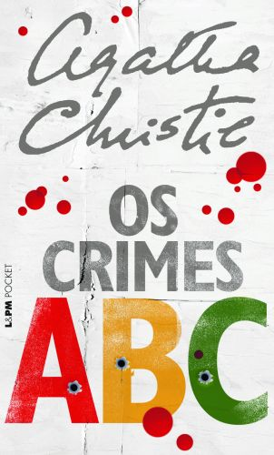

Catálogo de Obras

O Menino do Pijama Listrado (+12)
more_vert
Uma fábula emocionante sobre a amizade proibida entre Bruno e Shmuel.
Detalhes da Obraclose
A inocência das crianças contrasta com o horror do Holocausto em um final que marca o leitor para sempre.
Temas: Inocência, Holocausto, Amizade.

A Menina que Roubava Livros (+10)
more_vert
Narrado pela Morte, conta a história de Liesel Meminger e seu amor pelos livros.
Detalhes da Obraclose
Liesel passa a salvar livros destinados à destruição na Alemanha Nazista.
Temas: Sobrevivência, Literatura, Compaixão.

Os Crimes ABC (+12)
more_vert
Hercule Poirot enfrenta um assassino em série que escolhe suas vítimas em ordem alfabética.
Detalhes do Mistérioclose
O livro inova ao alternar narrativas. Poirot precisa descobrir se o alfabeto é a real motivação ou apenas uma cortina de fumaça.
Temas: Mistério, Investigação, Psicologia Criminal.